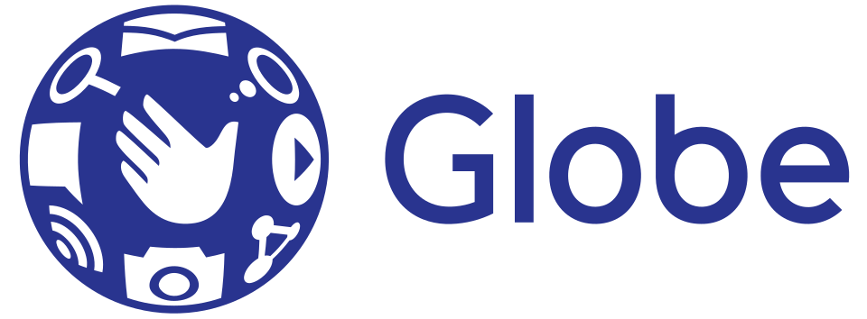

글로브 텔레콤 Globe Telecom
글로브 텔레콤(Globe Telecom)은 필리핀 타기그의 Bonifacio Global City에 본사를 둔 통신 회사이다. 필리핀에서 가장 큰 규모의 이동통신, 유선, 광대역 네트워크 가운데 하나를 운영한다.
최종 업데이트

글로브 텔레콤은 어떤 브랜드인가
글로브는 필리핀에서 이동통신, 유선 통신, 광대역 네트워크를 운영하는 통신 회사이다. 2025년 11월 기준 가입자는 63.1 million명으로, 필리핀에서 가입자가 가장 많은 통신망이다.
주요 주주는 Ayala Corporation과 Singtel이며, 필리핀 증권거래소에 종목 코드 GLO로 상장되어 있다. 2G, 3G, 3.5G HSPA+, 4G LTE, LTE-A 네트워크로 무선 서비스를 제공하고, 5G는 주요 지역을 중심으로 구축하고 있다.
5G는 전국 3,000곳 이상에서 이용할 수 있으며, National Capital Region, 다바오시, 세부에서는 인구의 거의 100%를 포괄한다. 경쟁사는 오래된 PLDT와 신생 Dito Telecommunity이며, 유선 인터넷 사업에서는 Converge ICT와도 경쟁한다.
글로브 텔레콤은 어떻게 시작되고 성장했나
1928년 12월 8일 필리핀 입법부가 Act No. 3495로 Robert Dollar Company에 무선 장거리 통신 사업 프랜차이즈를 부여했고, 1934년 11월 28일 Act No.
4150으로 이 권리가 Globe Wireless Limited로 이전되었다. Globe Wireless Limited는 1935년 1월 15일 필리핀에서 설립되었다.
1965년 Mackay Radio & Telegraph Company, Philippine Press Wireless와 합병해 Globe-Mackay Cable and Radio Corporation이 되었고, 1974년 Ayala Corporation이 투자를 시작해 1975년 8월 11일 주식을 공개했다. 이는 필리핀 통신사 최초의 주식 공개였다.
1991년 Clavecilla Radio Corporation과 합병해 GMCR, Inc.가 되었고, 1998년 8월 20일 Globe Telecom, Inc.로 이름을 바꿨다.
글로브 텔레콤의 브랜드 아이덴티티는 무엇인가
Ayala Corporation과 Singtel을 주요 주주로 두고, 1935년 설립된 Globe Wireless Limited에서 이어진 필리핀 최대 가입자 규모의 통신사이다.
글로브 텔레콤의 대표 제품과 서비스는 무엇인가
무선 서비스는 2G, 3G, 3.5G HSPA+, 4G LTE, LTE-A 네트워크로 제공하며 5G를 구축하고 있다. 이동통신 외에 고정 회선과 광대역 사업도 운영한다.
2001년 Isla Communications Company, Inc.를 인수했고, 2003년 고정 회선 사업 자산과 가입자를 Islacom으로 이전해 유선 서비스를 통합했다. Islacom은 이후 Innove Communications, Inc.로 이름을 바꿨다.
2004년에는 자회사 G-Xchange, Inc.를 통해 GCash 브랜드의 모바일 결제·송금 서비스를 시작했다.
글로브 텔레콤은 지금 어떤 상태인가
주요 주주는 Ayala Corporation과 Singtel이며, 필리핀 증권거래소에 종목 코드 GLO로 상장되어 있다. 본사는 타기그의 Bonifacio Global City에 있다.
2025년 11월 기준 가입자는 63.1 million명으로 필리핀에서 가장 많다. 5G는 전국 3,000곳 이상에서 제공되며 주요 지역을 중심으로 구축이 계속되고 있다.
글로브 텔레콤 로고는 어떻게 변해왔나
자주 묻는 질문
글로브 텔레콤는 어느 나라 브랜드인가요?
글로브 텔레콤는 필리핀의 기술·전자 브랜드입니다.
글로브 텔레콤는 언제 설립되었나요?
글로브 텔레콤는 1935년 설립되었습니다.
글로브 텔레콤의 브랜드 아이덴티티는 무엇인가요?
Ayala Corporation과 Singtel을 주요 주주로 두고, 1935년 설립된 Globe Wireless Limited에서 이어진 필리핀 최대 가입자 규모의 통신사이다.
글로브 텔레콤의 대표 제품은 무엇인가요?
무선 서비스는 2G, 3G, 3.5G HSPA+, 4G LTE, LTE-A 네트워크로 제공하며 5G를 구축하고 있다.
글로브 텔레콤는 현재 어떤 상태인가요?
주요 주주는 Ayala Corporation과 Singtel이며, 필리핀 증권거래소에 종목 코드 GLO로 상장되어 있다.
글로브 텔레콤의 본사는 어디에 있나요?
글로브 텔레콤의 본사는 마닐라에 있습니다(위키데이터 기준).
글로브 텔레콤의 모기업은 어디인가요?
글로브 텔레콤의 모기업은 썬 마이크로시스템즈입니다(위키데이터 기준).
출처와 검증
글로브 텔레콤 관련 참고: 공식 웹사이트 · 위키데이터 Q3543983 · 한국어 위키백과 · 영어 위키백과. 브랜드명은 한글과 원어를 함께 표기하되 데이터에 없는 표기는 만들지 않습니다. 기원 국가·설립연도는 검수된 정의문에서 확인된 값을 우선하고, 없을 때만 공식 웹사이트 URL이 일치하는 위키데이터 개체의 값을 씁니다. 탄생일의 월·일은 위키데이터, 위키백과 정보상자, 본문 가운데 같은 연월로 확인되는 값만 싣고, 출처끼리 다르면 싣지 않습니다. 위키데이터 값은 2026-11-14 기준입니다.